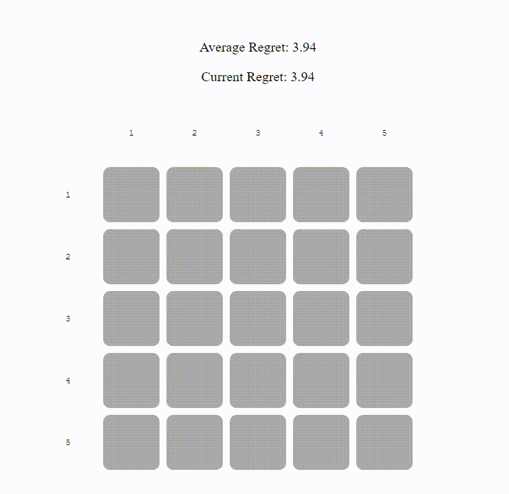

Stackelberg Game¶
{kind=link}
This environment is designed to testing any leader's (row player's) learning strategy in an unknown general-form Stackelberg games, with unknown leader rewards and an unknown follower. At each round, the leader selects an action (row) i, followed by the follower’s response action j (column) determined by certain follower behavior mode. The leader/user then observes realized (possibly noisy) reward for action profile (i,j), as highlighted at the (i, j) cells above.
The current average regret records the difference between optimal leader utility in the ideal situation with complete knowledge of follower and the actual utility obtained by the leader so far.
import numpy as np
from sigym import Platform
T = 10
m, n = 3, 3
trial = 5
for behavior_mode in ["random", "best_response", "quantal_response", "mwu", "ftl", 'delta_suboptimal']:
print("--------------------"*5, "Attacker mode: {}".format(attacker_mode), "--------------------"*5)
rgt, cur_utility = 0.0, 0.0
for tr in range(trial):
# Initialize an instance
agent, env = Platform(m, n, behavior_mode)
u_sse = env.compute_SSE()
x = [np.random.rand() for i in range(m)]
temp = sum(x)
x = [i/temp for i in x]
for t in range(T):
i_t, j_t = env.step(x, agent)
cur_utility += env.compute_utility(i_t, j_t)
# User-defined update rule - random update as an example
x = [np.random.rand() for i in range(m)]
temp = sum(x)
x = [i/temp for i in x]
rgt += (u_sse*T - cur_utility)/T
print("The averaged regret you get over {} trials is {}".format(trial, rgt/trial))